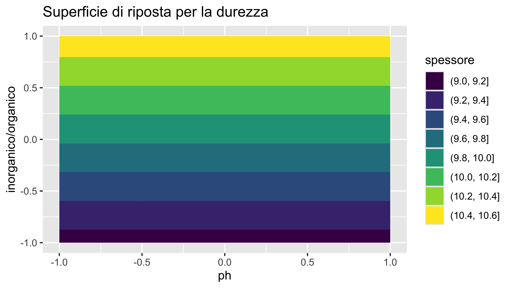
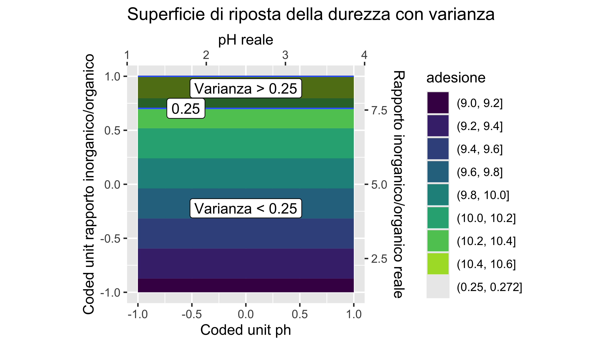

| StdOrder | RunOrder | .treat | .rep | A | B | A_s | B_s | ades | dur1 | dur2 | dur3 | dur4 |
|---|---|---|---|---|---|---|---|---|---|---|---|---|
| 1 | 4 | (1) | 1 | -1 | -1 | 1.0 | 1 | NA | NA | NA | NA | NA |
| 2 | 3 | a | 1 | 1 | -1 | 4.0 | 1 | NA | NA | NA | NA | NA |
| 3 | 8 | b | 1 | -1 | 1 | 1.0 | 9 | NA | NA | NA | NA | NA |
| 4 | 2 | ab | 1 | 1 | 1 | 4.0 | 9 | NA | NA | NA | NA | NA |
| 5 | 7 | (1) | 2 | -1 | -1 | 1.0 | 1 | NA | NA | NA | NA | NA |
| 6 | 5 | a | 2 | 1 | -1 | 4.0 | 1 | NA | NA | NA | NA | NA |
| 7 | 6 | b | 2 | -1 | 1 | 1.0 | 9 | NA | NA | NA | NA | NA |
| 8 | 1 | ab | 2 | 1 | 1 | 4.0 | 9 | NA | NA | NA | NA | NA |
| 9 | 12 | center | 1 | 0 | 0 | 2.5 | 5 | NA | NA | NA | NA | NA |
| 10 | 10 | center | 2 | 0 | 0 | 2.5 | 5 | NA | NA | NA | NA | NA |
Rivestimenti protettivi sol-gel ibridi nanocompositi.
Tommaso Stefani
2025-10-15
Descrizione dell’attività
Premessa
I dati riportati nel presente documento sono interamente generati a scopo didattico e non derivano da esperimenti reali.
L’obiettivo principale è illustrare l’approccio sperimentale e statistico nell’analisi di rivestimenti sol-gel ibridi su substrati di legno di larice, mostrando come variano le proprietà di adesione e durezza in funzione dei parametri di sintesi.
Ogni valore numerico deve essere interpretato come un esempio illustrativo e non come un dato sperimentale reale.
Ogni risultato riportato non ha valore scientifico ma solo scopo esplicativo.
Descrizione dell’attività
In questa attività si studiano e realizzano rivestimenti sol-gel ibridi nanocompositi su substrati di legno di larice.
L’obiettivo è quello di individuare le combinazioni dei parametri di sintesi che garantiscano le migliori prestazioni in termini di adesione, durezza e uniformità dei valori di durezza sulla superficie del rivestimento.
Per materiali quali l’acciaio questi rivestimenti rappresentano un’alternativa ai tradizionali trattamenti cromati o chimici più impattanti, rispondendo alla crescente esigenza di soluzioni eco-friendly e sostenibili nell’ambito dei materiali protettivi.
Descrizione dell’attività
In questa attività si andrà a valutare l’impatto dei seguenti fattori:
- ph della soluzione di \(HCl\)
- rapporto inorganico/organico
sui seguenti parametri assunti come risposta:
- forza di adesione
- durezza
- omogeneità (l’opposto della varianza) del rivestimento in termini di durezza
Si seguirà l’approcio statistico basato sul central composite design (CCD) il quale permette di verificare una eventuale curvatura della risposta.
Cenni teorici
Chimica dei rivestimenti sol–gel ibridi
I rivestimenti sol–gel si basano sulla trasformazione di precursori alchil- o trialcoxisilani in una rete solida di silice tramite idrolisi e condensazione.
Nel caso dei rivestimenti ibridi organico-inorganici, i precursori più comuni sono:
- TEOS (tetraetilortosilicato, \(Si(OC_2H_5)_4\)): componente inorganica, responsabile della formazione della rete \(Si–O–Si\).
- GPTMS (3-glicidossipropiltrimetossisilano, \(C_9H_{20}O_5Si\)): componente organica, che conferisce funzionalità reattive e flessibilità alla rete.
- TEOS (tetraetilortosilicato, \(Si(OC_2H_5)_4\)): componente inorganica, responsabile della formazione della rete \(Si–O–Si\).
Idrolisi dei precursori
L’idrolisi di TEOS o GPTMS avviene in presenza di acqua e di un catalizzatore acido o basico, trasformando i gruppi alchossilici in gruppi silanolici (\(Si–OH\)):
\[ Si(OR)_4 + 4 H_2O \rightarrow Si(OH)_4 + 4 ROH \]
dove \(R\) può essere un gruppo etilico (nel TEOS) o metilico (nel GPTMS).
Chimica dei rivestimenti sol–gel ibridi
Condensazione e formazione della rete
I gruppi silanolici generati reagiscono tra loro formando legami silossanici (\(Si–O–Si\)) e liberando acqua o alcol:
\[ Si–OH + HO–Si \rightarrow Si–O–Si + H_2O \]
oppure
\[ Si–OH + Si–OR \rightarrow Si–O–Si + ROH \]
Queste reazioni di condensazione portano alla formazione di una rete tridimensionale solida, responsabile delle proprietà barriera e meccaniche del rivestimento.
Chimica dei rivestimenti sol–gel ibridi
Formazione del rivestimento ibrido
Nel caso di GPTMS, il gruppo organico epossidico può ulteriormente reagire con gruppi amminici o idrossilici presenti nell’ambiente, creando un reticolo ibrido organico-inorganico:
\[ R–CH–(epossido) + R'–OH \rightarrow R–CH–OH–R' \]
Questo legame organico conferisce flessibilità e migliora l’adesione al substrato metallico.
Chimica dei rivestimenti sol–gel ibridi
Sintesi controllata
La composizione e le condizioni di processo (rapporto \(TEOS/GPTMS\), pH, temperatura di essiccazione ecc.) influenzano profondamente:
- la densità della rete \(Si–O–Si\);
- la distribuzione dei gruppi organici;
- la resistenza all’adesione, lo spessore e lan resistenza alla corrosione del rivestimento finale.
Central composite design - CCD
Il Central Composite Design (CCD) è una metodologia di progettazione sperimentale molto utilizzata nelle analisi di ottimizzazione dei processi chimici e dei materiali, particolarmente indicata quando si sospettano effetti non lineari. Questo disegno sperimentale permette di valutare preventivamente la curvature del modello di risposta, aggiungendo punti centrali replicati che migliorano la stima della variabilità sperimentale e la riproducibilità dei risultati.
Grazie alla sua struttura preventiva, il CCD permette di prevedere il comportamento del sistema nei valori intermedi delle variabili, senza la necessità di testare ogni possibile combinazione sperimentale, migliorando così l’efficienza e l’affidabilità dell’ottimizzazione del processo.
Parte sperimentale
Apparecchiatura
- metiltrietossisilano \(CH_3Si(C_2H_5O)_3\) (precursore organico - MTES)
- tetraetilsilicato \(Si(OC_2H_5)_4\) (precursore inorganico - TEOS)
- etanolo \(CH_3CH_2OH\)
- soluzione \(HCl\) con ph 1
- soluzione \(HCl\) con ph 4
- palloncino con tappo da 100 ml
- pipetta
- propipetta
- agitatore magnetico
- substrati di alluminio
- matite per test della matita
- lente per test dell’adesione
- scotch per test dell’adesione
- taglierino a griglia per test dell adesione
Procedimento
Si riporta lo svolgimento necessario per condurre una prova.
Per la preparazione del sol-gel:
Posizionare il palloncino sotto cappa aspirante, fissandolo con un supporto adatto (asta + morsetto).
Collocare l’agitatore magnetico sotto il pallone e inserire al suo interno una barretta magnetica.
Si inserisce la quantità di MTES prevista dalla prova e 15 ml di M (quantità fissa per tutte le prove).
Si lascia agitare per 5 minuti verificando che non vi siano precipitazioni o reazioni non previste.
Si aggiungono 1.3 ml (quantità fissa) di soluzione di \(HCl\) con ph previsto dalla prova.
Si lascia agitare per 5 minuti verificando che non vi siano precipitazioni o reazioni non previste.
Si aggiuge la quantità di TEOS prevista dalla prova
Si lascia agitare per 30 minuti.
Procedimento
Per applicare il sol-gel al substrato scelto:
- Si scelglie un campione che permetta di eseguire tutte le misure previste dal piano fattoriale.
- Si prepara il campione pulendo con etanolo
- Si applica il sol-gel tramite pennello (si possono utilizzare anche altre metodologie) stendendo uno strato uniforme e ponendo attenzione ad applicarlo in maniera uguale ai campioni delle altre prove.
- Si lascia asciugare fino a solidificazione.
Procedimento
Per le misure di adesione (secondo UNI EN ISO 2409):
Preparazione del campione: assicurarsi che la superficie rivestita sia asciutta e pulita.
Esecuzione della grigliatura: con un apposito taglierino o strumento, incidere sulla superficie una serie di tagli paralleli e perpendicolari, formando una griglia (il numero e la distanza dipendono dallo spessore del rivestimento).
Applicazione del nastro adesivo: applicare sopra la griglia un pezzo di nastro adesivo standardizzato (scotch), premendolo bene per garantire il contatto.
Rimozione del nastro: staccare il nastro con un movimento rapido e deciso.
Valutazione: confrontare la superficie incisa con le classificazioni previste dalla norma UNI EN ISO 2409, che vanno da 0 (adesione ottima, nessun distacco) a 5 (adesione scarsa, ampi distacchi).
Allineare la linea presente su uno dei due corsoi con una delle diagonali dell’impronta, in modo da fissare l’orientamento corretto per la misurazione
Procedimento

Procedimento
Per le misure di durezza:
Per le misure di durezza (secondo UNI 10782):
Preparazione del campione: pulire e asciugare la superficie da testare.
Scelta delle matite: utilizzare una serie di matite normalizzate con durezza progressiva (da 8B, molto morbida, a 8H, molto dura).
Preparazione delle punte: appuntire le matite e spianare la punta a 90° su carta abrasiva per avere una superficie piatta e uniforme.
Esecuzione del test: posizionare la matita sul rivestimento con un angolo di circa 45° e spingerla in avanti esercitando una pressione costante.
Valutazione: individuare la matita più dura che non incide o non scalfisce il film superficiale.
Risultato: la durezza del rivestimento viene classificata con il grado della matita corrispondente (es. “HB”, “F”, “2H”).
Calcolo delle quantità di MTES e di TEOS
Nel calcolo delle quantità si mantiene costante il numero di moli di TEOS, mentre la quantità di MTES viene variata in modo da rispettare il rapporto inorganico/organico stabilito. Una volta determinato il numero di moli di MTES necessario, questo viene convertito prima in grammi (tramite la massa molare) e successivamente in millilitri (tramite la densità).
In questo modo, fissando il TEOS come riferimento, si ottengono i volumi corretti dei due precursori da introdurre nel pallone. Il rapporto inorganico/organico definisce quindi direttamente la quantità di MTES da aggiungere affinché il rapporto molare tra precursore inorganico e organico sia rispettato.
Informazioni di sicurezza
- Metiltrietossisilano (MTES): infiammabile, irritante per occhi e vie respiratorie. Usare sotto cappa chimica.
- Tetraetilsilicato (TEOS): infiammabile, irritante per occhi, pelle e vie respiratorie. Usare sotto cappa chimica.
- Etanolo: altamente infiammabile. Tenere lontano da fiamme libere o superfici calde.
- Soluzioni acide (\(H_2O\) pH 1 e pH 4): corrosive (pH 1) o irritanti (pH 4). Manipolare con guanti e occhiali di protezione.
- Scotch, matite, taglierino a griglia: rischi meccanici di taglio o scheggiature. Maneggiare con cautela.
Elaborazione dei dati
Si specifica nuovamente che i dati utilizzati nel seguito non derivano da esperimenti reali, ma sono stati generati a titolo esemplificativo. I risultati presentati nel documento non hanno quindi valore scientifico e non corrispondono ad evidenze sperimentali reali.
Analisi ANOVA con CCD
Piano fattoriale
Si crea il piano fattoriale \(2 \cdot 2^2\) con l’aggiunta di un punto centrale ripetuto 5 volte (per vereificare la presenza o meno di curvatura della risposta).Si ha quindi un piano fattoriale a central composite design.
In quanto si vuole valutare la risposta in termini di adesione e di durezza del rivestimento sono presenti entrambe nel piano. Inoltre le misure di durezza sono ripetute 4 volte in punti diversi del campione perchè si desidera valutare l’omogeneità della risposta in termini di durezza.
Piano fattoriale
Raccolta dati
Per quanto riguarda il test dell’adesione, si assegnano valori da 0 (classe 0) a 5 (classe 5).
Per quanto riguarda la misura della durezza, il test delle matite prevede di assegnare un livello di durezza tra i seguenti: 8B, 7B, 6B, 5B, 4B, 3B, 2B, B, HB, F, H, 2H, 3H, 4H, 5H, 6H, 7H, 8H
Per consentire un’analisi statistica, a ogni classe di durezza viene assegnato un numero crescente, da 1 per 8B a 18 per 8H.
Raccolta dati
Si importano i dati raccolti:
| StdOrder | RunOrder | .treat | .rep | A | B | A_s | B_s | ades | dur1 | dur2 | dur3 | dur4 |
|---|---|---|---|---|---|---|---|---|---|---|---|---|
| 1 | 4 | (1) | 1 | -1 | -1 | 1.0 | 1 | 1 | 9 | 9 | 9 | 9 |
| 2 | 3 | a | 1 | 1 | -1 | 4.0 | 1 | 1 | 9 | 9 | 10 | 9 |
| 3 | 8 | b | 1 | -1 | 1 | 1.0 | 9 | 2 | 10 | 10 | 10 | 11 |
| 4 | 2 | ab | 1 | 1 | 1 | 4.0 | 9 | 3 | 10 | 10 | 10 | 11 |
| 5 | 7 | (1) | 2 | -1 | -1 | 1.0 | 1 | 1 | 9 | 9 | 8 | 9 |
| 6 | 5 | a | 2 | 1 | -1 | 4.0 | 1 | 2 | 9 | 9 | 9 | 9 |
| 7 | 6 | b | 2 | -1 | 1 | 1.0 | 9 | 2 | 10 | 11 | 10 | 11 |
| 8 | 1 | ab | 2 | 1 | 1 | 4.0 | 9 | 3 | 11 | 11 | 10 | 11 |
| 9 | 12 | center | 1 | 0 | 0 | 2.5 | 5 | 2 | 9 | 9 | 10 | 9 |
Raccolta dati
Si aggiungono le due colonne media e varianza per la grandezza della durezza e si rimuovono le 4 colonne relative alle misure della durezza in quanto non interessano più.
| StdOrder | RunOrder | .treat | .rep | A | B | A_s | B_s | ades | dur_media | dur_var |
|---|---|---|---|---|---|---|---|---|---|---|
| 1 | 4 | (1) | 1 | -1 | -1 | 1 | 1 | 1 | 9.00 | 0.0000000 |
| 2 | 3 | a | 1 | 1 | -1 | 4 | 1 | 1 | 9.25 | 0.2500000 |
| 3 | 8 | b | 1 | -1 | 1 | 1 | 9 | 2 | 10.25 | 0.2500000 |
| 4 | 2 | ab | 1 | 1 | 1 | 4 | 9 | 3 | 10.25 | 0.2500000 |
| 5 | 7 | (1) | 2 | -1 | -1 | 1 | 1 | 1 | 8.75 | 0.2500000 |
| 6 | 5 | a | 2 | 1 | -1 | 4 | 1 | 2 | 9.00 | 0.0000000 |
| 7 | 6 | b | 2 | -1 | 1 | 1 | 9 | 2 | 10.50 | 0.3333333 |
| 8 | 1 | ab | 2 | 1 | 1 | 4 | 9 | 3 | 10.75 | 0.2500000 |
Analisi ANOVA
È evidente che la risposta si riferisce a 3 grandezze:
- adesione
- durezza media
- varianza della durezza
Sarà quindi necessario effettuare 3 relative analisi anova. Nel modello lineare si inserisce un termine quadratico per verificare se vi sia un’eventuale curvatura della risposta ( il piano prevedeva punto centrale prorpio a questo scopo).
Analisi ANOVA
| Df | Sum Sq | Mean Sq | F value | Pr(>F) | |
|---|---|---|---|---|---|
| A | 1 | 1.1250000 | 1.1250000 | 3.6000000 | 0.0943498 |
| B | 1 | 3.1250000 | 3.1250000 | 10.0000000 | 0.0133491 |
| I(A^2) | 1 | 0.0480769 | 0.0480769 | 0.1538462 | 0.7051292 |
| A:B | 1 | 0.1250000 | 0.1250000 | 0.4000000 | 0.5447373 |
| Residuals | 8 | 2.5000000 | 0.3125000 | NA | NA |
Analisi ANOVA
| Df | Sum Sq | Mean Sq | F value | Pr(>F) | |
|---|---|---|---|---|---|
| A | 1 | 0.0703125 | 0.0703125 | 0.5806452 | 0.4679274 |
| B | 1 | 4.1328125 | 4.1328125 | 34.1290323 | 0.0003863 |
| I(A^2) | 1 | 0.2433894 | 0.2433894 | 2.0099256 | 0.1940247 |
| A:B | 1 | 0.0078125 | 0.0078125 | 0.0645161 | 0.8059018 |
| Residuals | 8 | 0.9687500 | 0.1210938 | NA | NA |
Analisi ANOVA
| Df | Sum Sq | Mean Sq | F value | Pr(>F) | |
|---|---|---|---|---|---|
| A | 1 | 0.0008681 | 0.0008681 | 0.0598802 | 0.8128450 |
| B | 1 | 0.0425347 | 0.0425347 | 2.9341317 | 0.1250791 |
| I(A^2) | 1 | 0.0000134 | 0.0000134 | 0.0009212 | 0.9765300 |
| A:B | 1 | 0.0008681 | 0.0008681 | 0.0598802 | 0.8128450 |
| Residuals | 8 | 0.1159722 | 0.0144965 | NA | NA |
Non si riporta l’analisi ma si sottolinea la necessità di effettuare l’analisi dei residui al fine di validare il modello lineare utilizzato per l’ANOVA
Analisi ANOVA senza termine quadratico e termini non significativi
Per nessuna delle risposte risulta significativo il termine quadratico quindi ripetiamo l’analisi anova non considerando i termini quadratici e i termini non significativi dell’analisi precedente.
| Df | Sum Sq | Mean Sq | F value | Pr(>F) | |
|---|---|---|---|---|---|
| A | 1 | 1.125000 | 1.1250000 | 4.208633 | 0.0673395 |
| B | 1 | 3.125000 | 3.1250000 | 11.690648 | 0.0065567 |
| Residuals | 10 | 2.673077 | 0.2673077 | NA | NA |
Analisi ANOVA senza termine quadratico e termini non significativi
| Df | Sum Sq | Mean Sq | F value | Pr(>F) | |
|---|---|---|---|---|---|
| B | 1 | 4.132812 | 4.1328125 | 35.23381 | 9.79e-05 |
| Residuals | 11 | 1.290264 | 0.1172968 | NA | NA |
Analisi ANOVA senza termine quadratico e termini non significativi
| Df | Sum Sq | Mean Sq | F value | Pr(>F) | |
|---|---|---|---|---|---|
| B | 1 | 0.0425347 | 0.0425347 | 3.974475 | 0.0715833 |
| Residuals | 11 | 0.1177217 | 0.0107020 | NA | NA |
Analisi ANOVA senza termine quadratico e termini non significativi
Non si riporta l’analisi ma si sottolinea la necessità di effettuare l’analisi dei residui al fine di validare il modello lineare utilizzato per l’ANOVA
Superfici di riposta
Si puo ora visualizzare tramite un grafico a superficie di riposta (i fattori sono in coded unit) come diverse combinazioni dei due fattori considerati abbiano effetto in termini di:
- adesione
- durezza
- disomogeneità (varianza) della durezza in diversi punti del campione
Superfici di riposta


Superfici di riposta
Potrebbe essere di interesse osservare quali combinazioni dei fattori garantiscono che la varianza della durezza sia al di sotto di un certo valore soglia e determinati valori di durezza stessa.
Il seguente grafico permette di visualizzare quali combinazioni di fattori garantiscano una varianza della durezza al di sotto un certo valore (in questo caso assunto arbitrariamente) e i relativi valori di durezza. In seguito i grafici oltre ad avere gli assi espressi in coded unit sono espressi in unità reali.
Conclusioni
Dall’analisi dei risultati si osserva che nel range considerato:
Adesione: il fattore più influente risulta essere il rapporto inorganico/organico, mentre il pH ha un effetto minore:
- L’aumento del fattore ph produce un incremento dell’adesione
- Un’aumento del rapporto inorganico/organico produce una diminuzione dell’adesione (aumento della classe d’adesione).
Questi fattori presentano un effetto lineare nei range considerati. L’interazione tra i due fattori è statisticamente trascurabile in questo intervallo.
Conclusioni
- Durezza: il parametro predominante è il rapporto inorganico/organico, con una risposta lineare: aumentando il rapporto si aumenta la durezza del rivestimento.
Il pH e l’interazione tra i due fattori risultano non risultano statisticamente determinanti.
Conclusioni
- Omogeneità (varianza) della durezza: aumentando il rapporto inorganico/organico si osserva una diminuzione dell’omogeneità del rivestimento (aumento della varianza).
Ph e interazione tra i due fattori risutlano statisticamente non determinanti.
In sintesi, per ottimizzare le proprietà del rivestimento su substrati di legno (larice) operando sui fattori di sintesi nel range considerato è necessario bilanciare il rapporto inorganico/organico per massimizzare adesione e durezza, senza compromettere l’omogeneità del rivestimento.
Nota finale
Si ribadisce che le conclusioni sopra riportate sono solo esemplificative (non hanno valore scientifico): sono la conseguenza dell’analisi effettuata su dati generati al fine unico di mostrare la metodologia di analisi.